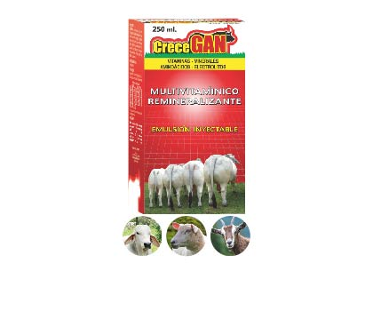
LINEAS DE NEGOCIO
Contamos con equipos de la mas avanzada tecnología necesarios en la producción y análisis de viales, tabletas, ampollas, cremas, jaleas, jarabes, suspensiones entre otros.
{kind=link}
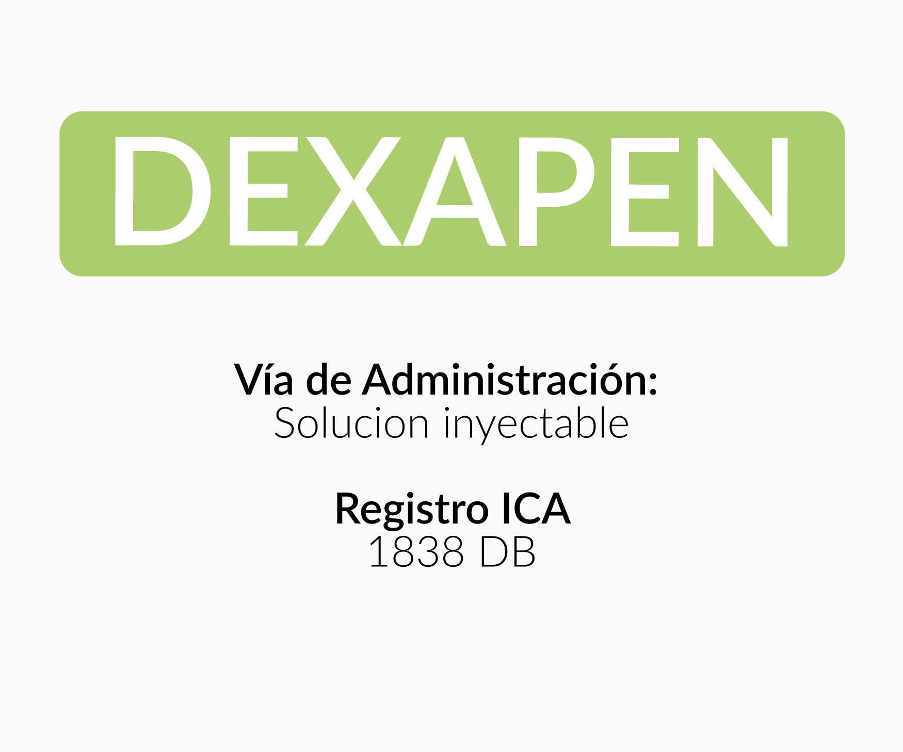
DEXAPEN®
Indicado en el tratamiento de neumonías, traqueobronquitis, abscesos, heridas infectadas, cistitis, nefritis, leptospirosis, vaginitis, acrobustitis, mastitis, infecciones podales, artritis sépticas, infecciones cutáneas, peritonitis, actinomicosis, tétano, mal rojo del cerdo y complicaciones bacterianas del moquillo, parvovirosis y fiebre aftosa.
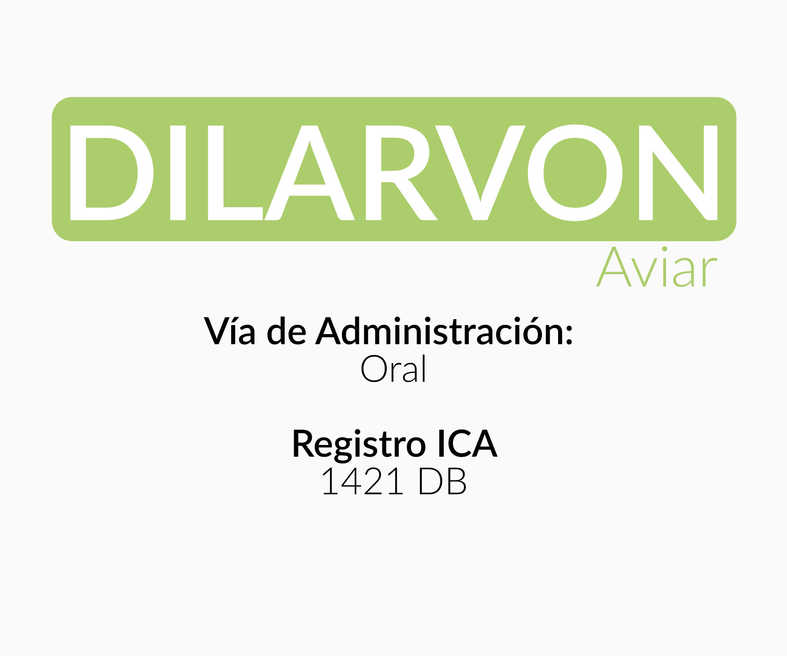
DILARVON AVÍCOLA®
Para controlar eficazmente las siguientes parasitarias: En ponedoras y pollas de reposición: Ascaridia galli, Heterakis gallinarum, Capillaria obsignata y Syngamus trachea.
En pollos de engorde:Heterakis gallinarum y Ascaridia galli.
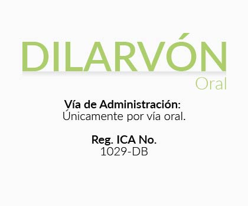
DILARVON ORAL®
Use DILARVON ORAL para el control deparásitos gastrointestinales y pulmonares de bovinos, ovinos y caprinos.
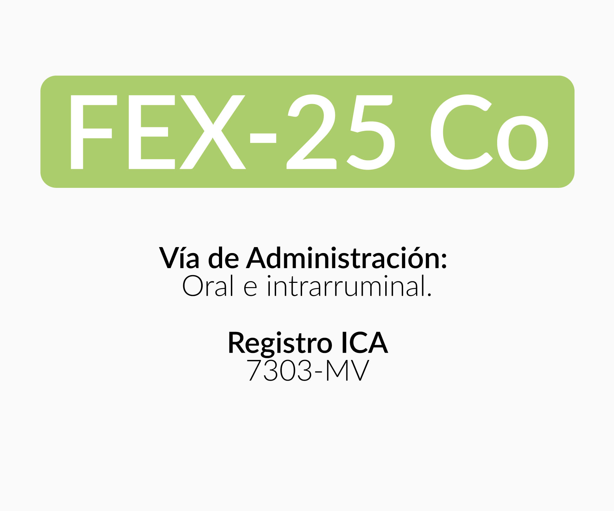
FEX 25 Co®
En bovinos, ovinos y caprinos para el tratamiento y control de huevos, larvas y adultos de los siguientes parásitos gastrointestinales, pulmonares y tenias.
IVERTIMEQ PASTA®
Con IVERTIMEQ PASTA, tendrá un efectivo control y tratamiento de diferentes tipos de parásitos de los equinos (gastrointestinales, cutáneos y pulmonares).
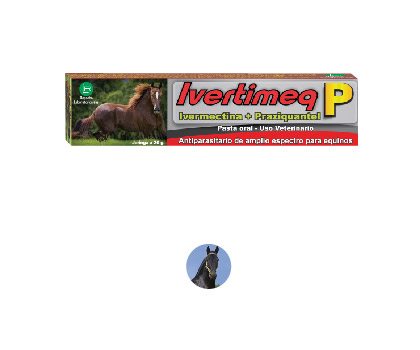
IVERTIMEC P®
IVERTIMEQ P es un antiparasitario de amplio espectro indicado para el control y tratamiento de los parásitos gastrointestinales, gastrófilos, parásitos cutáneos, parásito pulmonar y tenias de los equinos.
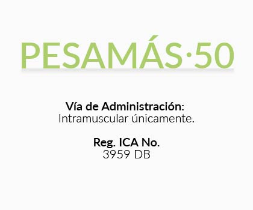
PESAMAS-50®
Anabólico coadyuvante en el tratamiento de estados en los que existe pérdida de peso. También está indicado como coadyuvante en raquitismo, osteomalacia y anemia en bovinos, equinos, porcinos y caninos.
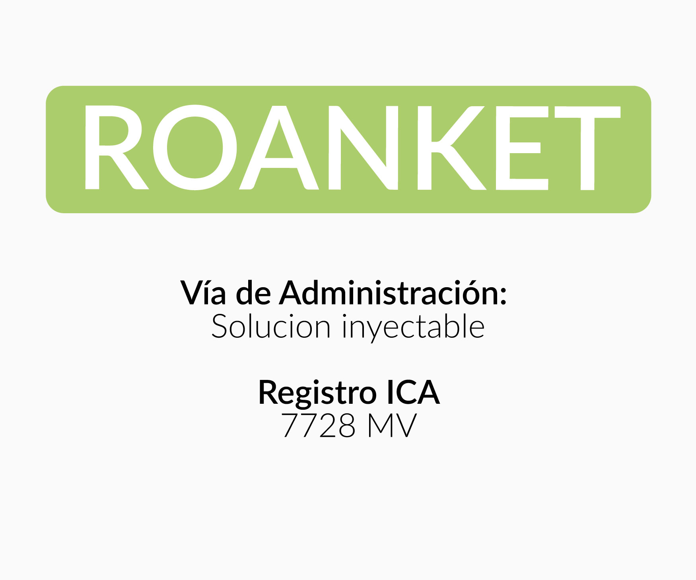
ROANKET®
En bovinos, equinos, porcinos y caninos, como antiinflamatorio, analgésico y antipirético, de afecciones de origen no infeccioso de los sistemas osteoarticular, músculo-esquelético y de tejidos blandos.
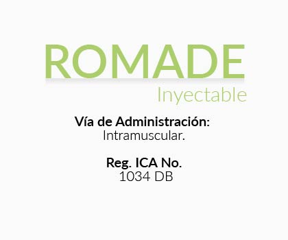
ROMADE Inyectable®
Para el control y tratamiento de bajos niveles de vitamina A en bovinos, equinos, porcinos, ovinos y caprinos.
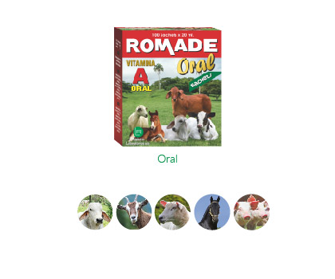
ROMADE Oral®
Para el control y tratamiento de bajos niveles de vitamina A en bovinos, equinos, porcinos, ovinos y caprinos.
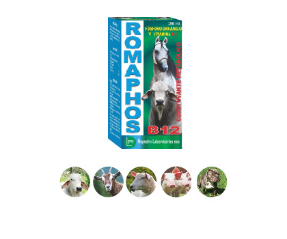
ROMAPHOS B12®
Indicado en los siguientes casos:
Trastornos del desarrollo de animales jóvenes y trastornos metabólicos generales, para estimular la función genésica de los reproductores machos, en las vacas lecheras en plena producción láctea, en la recuperación de animales para exposición y como revitalizador de animales de trabajo.
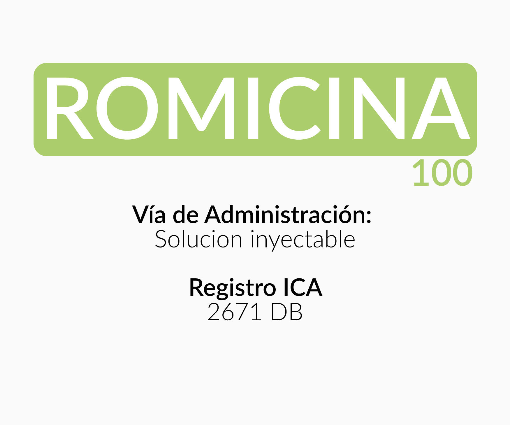
ROMICINA-100®
En bovinos, equinos, ovinos, caprinos, porcinos, caninos y aves para el tratamiento de infecciones.
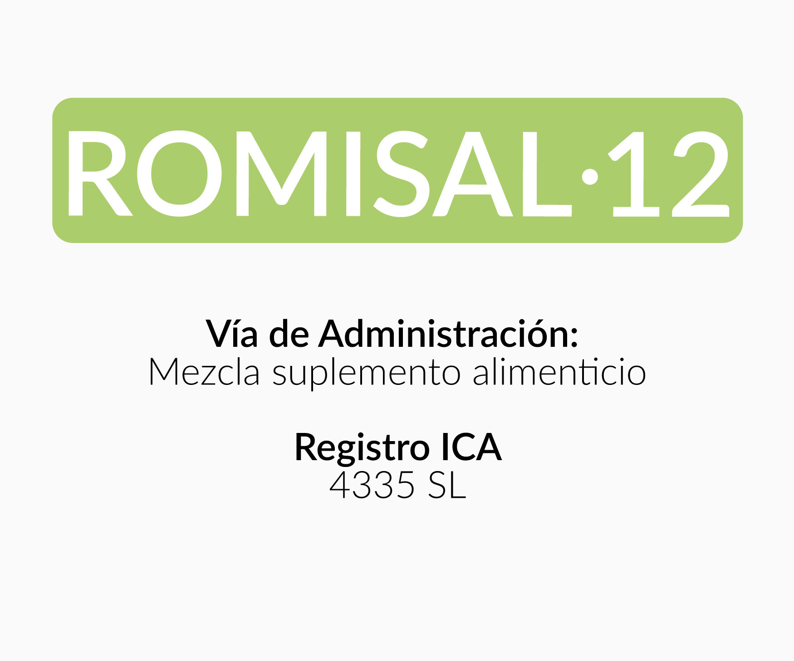
ROMISAL-12®
Es un suplemento mineral para la fabricación de sales mineralizadas para bovinos, equinos, ovinos y caprinos en todas las etapas de producción.
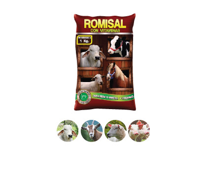
ROMISAL vitaminas®
Es un suplemento mineral y vitaminico para la elaboración de sales mineralizadas de bovinos, equinos, ovinos y caprinos en todas las etapas de producción.
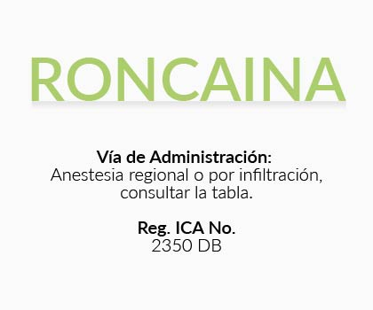
RONCAINA®
Es un potente anestésico local que actúa en forma directa sobre los nervios sensitivos y motores, produciendo una pérdida localizada, reversible y temporal de la sensibilidad y capacidad motora.

RONCAINA con Epinefrina®
La adición de Epinefrina, por su conocida acción vasoconstrictora, disminuye la rata de absorción de la Lidocaína, prolongando la duración de la anestesia, reduciendo la absorción sistémica y potencializando su acción.
La Epinefrina también disminuye notablemente el sangrado durante la intervención; esto es importante en las áreas altamente vascularizadas.
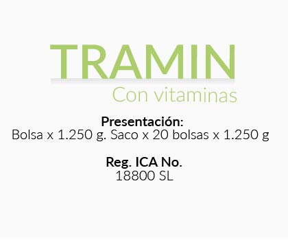
TRAMIN con Vitaminas®
TRAMIN con Vitaminas es una mezcla de minerales trazas y vitaminas para la elaboración de sales mineralizadas de bovinos, ovinos, caprinos y equinos.